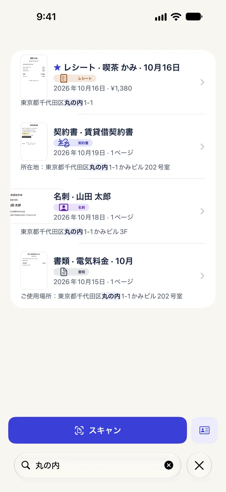
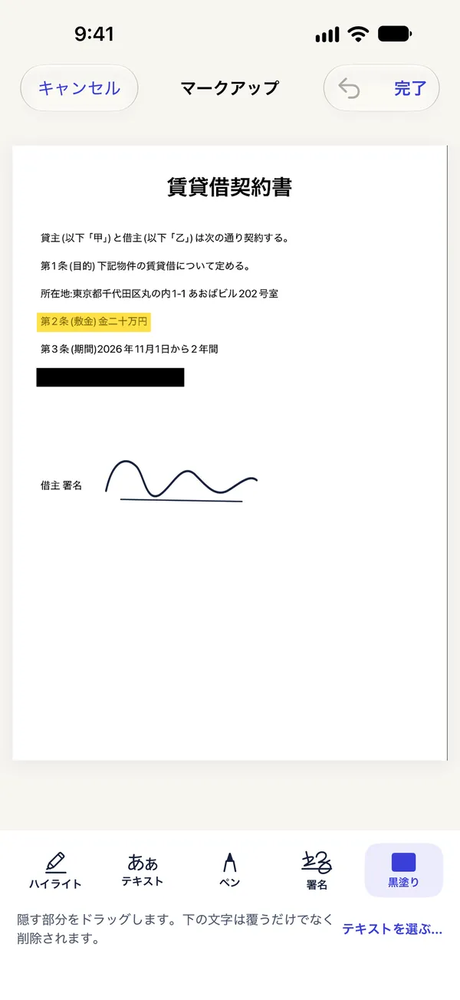
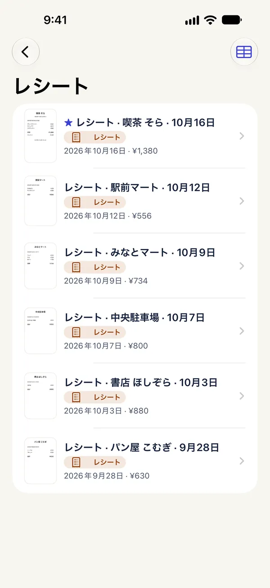

書類をアップロードしない
スキャナー
契約書、レシート、身分証、学校の書類を、このiPhoneの中だけに残る本物のPDFにスキャン。アカウントもアップロードも透かしもありません。
iPhone内のPaperkeepフォルダに普通のPDFで
日本語・韓国語・英語をデバイス内で
無料の書き出しでも一切なし
削除した書類は「最近削除した項目」に
きれいなPDFに
スキャン
複数ページを続けて撮影すると、端を検出してまっすぐに補正します。写真ライブラリやiPhone内のファイルからも読み込めます。
- フィルタ:オリジナル、補正、グレー、白黒、写真 — 書類の種類ごとに最後の選択を記憶
- 並べ替え、回転、4つの角での切り取り直し、取り消せる削除
- 写真ライブラリへのアクセスなしで読み込み
- ホーム画面やロック画面のウィジェットからスキャナを開く

書類の中の文字まで
検索
日本語・韓国語・英語の文字をiPhone内で読み取ります。タイトルだけでなく書類の中の文字でも見つけられて、検索は無料です。
- 書類の種類(レシート、身分証、名刺、契約書、メモ)とタイトルを提案 — どちらも変更できます
- ページのテキストをコピー
- Pro:ほかのアプリでも文字で探せる、検索できるPDF
署名、書き込み、
黒塗り
署名、ハイライト、書き込み、黒塗りをページの上で。黒塗りの下の文字は、覆うだけでなく削除されます。
- 結合、分割、ページ抽出
- 書き出し前に実際のサイズを表示する圧縮、パスワード
- 署名は次回のために、このiPhoneの中だけに保存


レシートは
自動で整理
レシートの日付と合計を読み取ってカードに表示し、レシートのスマートフォルダにまとめます。名刺は内容を確認してから新しい連絡先として保存できます。
- Pro:期間を選んでレシートをCSVに書き出し(日付・店名・合計・通貨)
- Pro:身分証モードで表裏を実寸でA4の1ページに
3ステップで十分です
スキャンか読み込み
複数ページを続けて撮影するか、写真やファイルから読み込みます。
整えて保存
切り取り、回転、フィルタを選ぶと、iPhone内にPDFとして保存。文字の読み取りもデバイス内です。
探して共有
中の文字で探して、PDF・JPEG・PNGで共有やプリント。透かしは入りません。
書類はiPhoneの外に
出ません
Paperkeepにはサーバーも、アカウントも、分析ツールもありません。スキャン、文字認識、すべてのツール、検索はこのiPhone内で動き、購入だけをApp Storeが扱います。
サーバーもネットワークのコードもありません。
App Storeのプライバシーラベル:データの収集なし。
iPhoneがロックされている間、書類のファイルは読み取れないよう保護されます。
ウィジェットはページや文字を表示せず、ロックした書類はそもそも表示されません。
スキャンは無料。
PDFツールはProで
スキャン・保存・整理・検索・共有・プリントは無料。回数制限も透かしもありません。Proでは検索できるPDF、署名や黒塗りなどのPDFツール、身分証モード、レシートCSV、フォルダロックが使えます。
Paperkeep Pro 週間
- すべてのPro機能
- 今週だけ必要なときに
- いつでも解約
Paperkeep Pro 年間
- すべてのPro機能
- 毎週使うなら、年間のほうが安くなります
- いつでも解約
Paperkeep Pro 買い切り
- すべてのPro機能
- 更新の支払いなし
サブスクリプションは期間終了の24時間前までに解約しない限り自動更新されます。お支払いはApple Accountに請求され、設定 › [ユーザ名] › サブスクリプションで管理・解約できます。週間プランに無料トライアルはありません。表示価格は日本の価格で、国や地域によって異なります。
気になること
書類はどこに保存されますか?
ファイルApp › このiPhone内 › Paperkeepに、普通のPDFとして保存されます。そこで開く、名前を変える、移動やコピーをしても、次にPaperkeepを開いたときに変更に追従します。
Paperkeepは書類をアップロードしますか?
いいえ。Paperkeepにはサーバーもネットワークのコードもありません。文字認識と検索もこのiPhone内で行い、購入だけをAppleのApp Storeが扱います。
無料でどこまで使えますか?
スキャン、保存、整理、書類の中の文字の検索、PDF・JPEG・PNGでの共有とプリント、名刺を連絡先に保存、ページのテキストのコピー、アプリのロックは無料です。無料の書き出しでも透かしは入りません。Proでは検索できるPDF、署名や黒塗りなどのPDFツール、身分証モード、レシートCSV、フォルダロック、ファイル名のルールが使えます。
無料トライアルはありますか?
日本と韓国では、年間プランの新規登録者に7日間の無料トライアルがあります。週間プランに無料トライアルはありません。トライアルを始めると、希望すれば請求の24時間前に一度だけ通知を受け取れます。
文字認識が間違っています
文字はiPhone内で読み取るため、かすれたレシートなどでは間違えることがあります。書類の画面で名前や種類を変更できます。大切な数字は確認してください。
解約したら、作った書類はどうなりますか?
そのまま残ります。Proを解約しても作った書類は消えず、検索できるPDFも検索できるままです。解約は設定 › [ユーザ名] › サブスクリプションから。
書類は、
自分のiPhoneに
まもなくApp Storeで公開します。